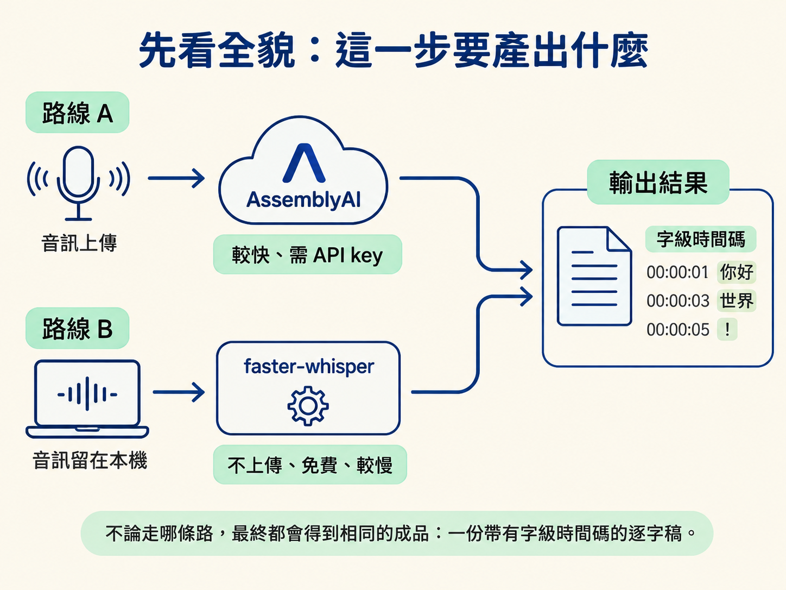
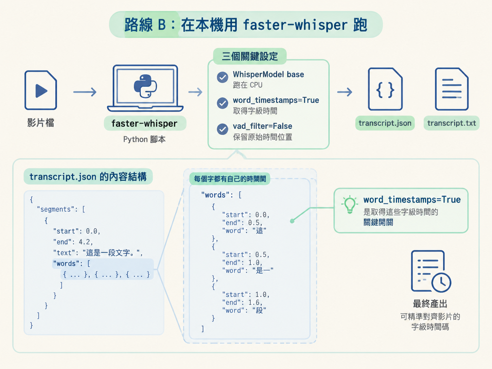

前面兩節已經確立：逐字稿是 agent 的耳朵，也是整條剪輯產線的時間軸；你也選好了工具，並把金鑰放進 .env。現在要把一段原始影片真正跑成逐字稿。
這一步位在「素材進來」與「開始剪輯」之間。你可以把它想成先替影片裝上一把有刻度的尺：不只知道說了什麼，還知道每一個字在影片的哪個時間點出現。下一節會用這份資料製作「原稿 vs 乾淨稿」的並排稽核頁，後面的剪輯與動畫也會依賴這些時間碼。
本課提供兩條路：
兩條路最後都要得到同一種成品：一份帶有字級時間碼的逐字稿，也就是每個字都有自己的開始與結束時間。

開始前先確認兩件事：
.env 裡已經填好 ASSEMBLYAI_API_KEY。如果素材不能上傳，或你不想使用雲端，請直接選路線 B。若使用 AssemblyAI，請不要把金鑰貼進對話；讓 agent 從本機的 .env 讀取，會比較安全。
最快的做法，是把素材路徑與工作規則交給 agent，讓它接上 AssemblyAI。以下 starter prompt 可以直接複製使用：
transcribe my raw recording and cut it into a clean video that keeps only my best take of
each line.
- my raw footage is here: C:/path/to/raw-footage.mp4
- transcribe it with AssemblyAI, a speech-to-text service that gives the exact time of
every word. if i don't have a key, use Whisper instead (free, runs on my own computer,
slower)
- never ask me to paste my AssemblyAI key into this chat. make a .env file in this folder
with an empty ASSEMBLYAI_API_KEY= line and tell me where it is. i'll fill it in myself,
then you read it from there
- when i say a line more than once, keep the last clean take and drop the earlier tries.
also cut stumbles, restarts, coughs and long pauses
- before you cut anything, show me the full text you plan to keep so i can read it through
and ok it
- then cut it in one go with ffmpeg (a free video tool, install it if it's missing) and
save it next to the raw file as cut.mp4, with a transcript of the cut
- check every join for chopped words or clicks, and list anything you're unsure about with
its time
only remove things. never reorder or rewrite what i said.送出前，先把其中的路徑換成你電腦上的實際位置。這段 prompt 的關鍵要求如下：
my raw footage is here: 後面接原始影片路徑。沒有正確路徑，agent 就找不到素材。transcribe it with AssemblyAI … gives the exact time of every word 指定使用 AssemblyAI，並要求回傳每個字的精確時間。如果沒有金鑰，則改用免費、在本機執行的 Whisper。never ask me to paste my AssemblyAI key into this chat 要求 agent 建立空的 .env 檔，並告訴你檔案位置。你自行填入金鑰，agent 再從檔案讀取，金鑰不需要經過對話。before you cut anything, show me the full text you plan to keep 要求在剪輯前先展示完整文字，讓你讀過並確認。這是下一節稽核流程的品質閘門。check every join … list anything you're unsure about with its time 要求剪完後檢查每個接點，找出被切到的字、突兀的接音或其他疑問，並附上時間。only remove things. never reorder or rewrite what i said. 限制 agent 只能刪除內容，不能重新排列，也不能改寫你說過的話。送出 prompt 後，agent 會引導你完成 AssemblyAI 的註冊與金鑰設定；新註冊通常有免費額度。接著它會回傳逐字稿。如果素材很長，也可能先交付文字，等你確認後才繼續剪輯。
拿到每個字都有開始與結束時間的逐字稿，路線 A 就完成了。
如果音訊不能上傳，或你希望素材留在自己的電腦，就使用本機路線。先安裝套件，再把影片路徑交給腳本：
pip install faster-whisper
python transcribe-whisper.py path/to/video.mp4腳本的核心工作很單純：載入模型、產生帶字級時間碼的逐字稿，最後把結果寫成 JSON 與文字檔。核心邏輯如下：
from faster_whisper import WhisperModel
…
model = WhisperModel("base", device="cpu", compute_type="int8")
segments, info = model.transcribe(str(VIDEO), language="en", word_timestamps=True, vad_filter=False)
…
for s in segments:
seg = {
"id": s.id,
"start": round(s.start, 2),
"end": round(s.end, 2),
"text": s.text.strip(),
"words": [{"start": round(w.start, 2), "end": round(w.end, 2), "word": w.word} for w in (s.words or [])],
}
segs.append(seg)
…
OUT_JSON.write_text(json.dumps({"info": {"duration": info.duration, "language": info.language}, "segments": segs}, indent=2))
OUT_TXT.write_text("\n".join(lines))這幾行就是本機路線的骨架：
WhisperModel("base", device="cpu", compute_type="int8") 載入 Whisper 的 base 模型，使用 CPU 執行。這個設定讓一般筆電也能運作，不需要獨立顯卡。word_timestamps=True 是關鍵開關。開啟後，Whisper 才會回傳每個字的開始與結束時間，而不只是整段句子的時間。vad_filter=False 關閉語音活動偵測的前置過濾，保留原始音訊的時間位置，讓時間碼對齊影片本身。"words": [{...}] 把每一段文字裡的單字與時間存下來，這就是字級時間碼在 JSON 裡的實際結構。
腳本完成後，終端機會印出 Wrote: …transcript.json 與 Wrote: …transcript.txt。JSON 會包含音訊長度、語言，以及一段一段的逐字稿；文字檔則是方便閱讀的版本，每行前面帶有時間戳。
這裡選擇 faster-whisper，而不是 whisperx，原因很實際：whisperx 依賴的 torchaudio 在 Windows 上容易因載入錯誤而失敗；faster-whisper 改用 CTranslate2，不需要 torch，執行通常穩定得多。
路線 A 把音訊送到雲端，通常幾十秒就能換回逐字稿；路線 B 不需上傳音訊，而且免費，但需要等待本機完成運算。
不論選哪一條，你最後都應該拿到：
路線 A：把 starter prompt 與素材路徑送出，agent 會接上 AssemblyAI，建立空的
.env讓你填入金鑰，接著回傳帶字級時間碼的逐字稿。路線 B：執行pip install faster-whisper，再執行python transcribe-whisper.py 影片路徑；腳本會寫出.transcript.json與.transcript.txt，其中word_timestamps=True是取得字級時間碼的關鍵。兩條路的成品相同：一份逐字稿，加上每個字的時間。
如果你看得到逐字稿，而且每個字都有對應時間，就完成了這一步。先不要直接剪輯；下一節會把這份原料整理成「原稿 vs 乾淨稿」的並排稽核頁，將要刪除與保留的內容標清楚，等你逐一確認後，再交給後面的剪輯流程。